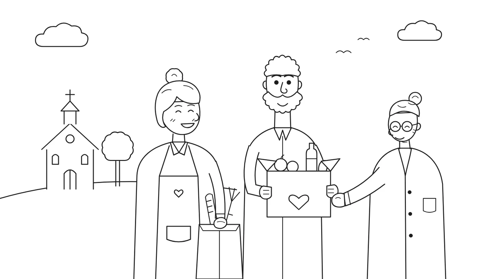

<!doctype html>
<html lang="ko">
<head>
<meta charset="utf-8">
<meta name="viewport" content="width=device-width,initial-scale=1,viewport-fit=cover">
<meta property="og:type" content="website">
<meta property="og:title" content="한국교회 사회봉사 자가진단">
<meta property="og:description" content="우리 교회 사회봉사의 강점과 약점은?">
<link rel="icon" href="img/cover.webp">
<title>한국교회 사회봉사 자가진단</title>
<meta name="description" content="우리 교회 사회봉사의 강점과 약점은?">
<link rel="preconnect" href="https://fonts.googleapis.com">
<link rel="preconnect" href="https://fonts.gstatic.com" crossorigin>
<link rel="stylesheet" href="https://fonts.googleapis.com/css2?family=Gowun+Batang:wght@400;700&family=Noto+Sans+KR:wght@400;500;700&display=swap">
<style>
html{-webkit-text-size-adjust:100%}
body{margin:0}
/* Layout: one narrow column like a phone booklet; one screen per step (cover → 안내 → 문항 → 분석 → 결과). */
:root{
  --bg:#ffffff; --paper:#f4f8f5; --ink:#1d2a22; --muted:#5f6f66; --line:#dbe6df;
  --green:#02783c; --green-ink:#ffffff; --green-soft:#e3f1e8; --blue:#4d80bf;
  --display:"Gowun Batang","Noto Serif KR",serif;
  --body:"Noto Sans KR","Apple SD Gothic Neo","Malgun Gothic",sans-serif;
}
@media (prefers-color-scheme:dark){:root:not([data-theme="light"]){
  --bg:#111814; --paper:#18221c; --ink:#e6eee9; --muted:#9aaba1; --line:#2a3a31;
  --green:#3fae6e; --green-ink:#0b1510; --green-soft:#1d3427; --blue:#86aee0; color-scheme:dark}}
:root[data-theme="dark"]{
  --bg:#111814; --paper:#18221c; --ink:#e6eee9; --muted:#9aaba1; --line:#2a3a31;
  --green:#3fae6e; --green-ink:#0b1510; --green-soft:#1d3427; --blue:#86aee0; color-scheme:dark}
*{box-sizing:border-box}
body{background:var(--bg);color:var(--ink);font-family:var(--body);font-size:16px;line-height:1.7;
  padding-left:max(16px,env(safe-area-inset-left,0px));padding-right:max(16px,env(safe-area-inset-right,0px));padding-block:24px 48px;word-break:keep-all}
.wrap{max-width:560px;margin:0 auto}
h1,h2,h3{font-family:var(--display);text-wrap:balance;margin:0}
p{margin:0}
.btn{appearance:none;border:0;cursor:pointer;font:inherit;font-weight:700;border-radius:999px;padding:14px 22px;
  background:var(--green);color:var(--green-ink);display:inline-flex;align-items:center;justify-content:center;gap:6px;text-decoration:none;width:100%;font-size:17px}
.btn:hover{filter:brightness(1.06)}
.btn.ghost{background:transparent;color:var(--green);border:1.5px solid var(--green)}
.btn:focus-visible,.opt:focus-visible,.back:focus-visible,input:focus-visible{outline:3px solid var(--blue);outline-offset:2px}
.screen{display:flex;flex-direction:column;gap:22px}

/* cover */
.cover-img{width:100%;border-radius:14px;border:1px solid var(--line);background:#fff;aspect-ratio:1000/563;object-fit:cover}
.eyebrow{font-size:13px;letter-spacing:.08em;color:var(--green);font-weight:700}
.cover h1{font-size:clamp(28px,7vw,38px);line-height:1.3}
.cover .sub{color:var(--muted);font-size:17px}
.stages{display:flex;flex-wrap:wrap;gap:8px}
.stages span{font-size:13px;padding:4px 12px;border-radius:999px;background:var(--green-soft);color:var(--green);font-weight:500}

/* info + name */
.card{background:var(--paper);border:1px solid var(--line);border-radius:16px;padding:22px;display:flex;flex-direction:column;gap:12px}
.card b{color:var(--green)}
label.q{font-family:var(--display);font-size:22px;font-weight:700;line-height:1.45}
input[type=text]{font:inherit;font-size:17px;padding:14px 16px;border-radius:12px;border:1.5px solid var(--line);background:var(--bg);color:var(--ink);width:100%}
input[type=text]::placeholder{color:var(--muted)}

/* question */
.top{display:flex;align-items:center;gap:12px}
.back{appearance:none;border:0;background:none;color:var(--muted);font:inherit;font-size:14px;cursor:pointer;padding:6px 0;white-space:nowrap}
.bar{flex:1;height:6px;border-radius:99px;background:var(--line);overflow:hidden}
.bar i{display:block;height:100%;background:var(--green);border-radius:99px;transition:width .3s}
.count{font-size:13px;color:var(--muted);font-variant-numeric:tabular-nums;white-space:nowrap}
.stage-tag{font-size:13px;font-weight:700;color:var(--blue);letter-spacing:.04em}
.qtext{font-family:var(--display);font-size:clamp(20px,5.2vw,24px);font-weight:700;line-height:1.5;min-height:3em}
.opts{display:flex;flex-direction:column;gap:10px}
.opt{appearance:none;font:inherit;text-align:left;cursor:pointer;padding:16px 18px;border-radius:14px;border:1.5px solid var(--line);background:var(--bg);color:var(--ink);font-size:17px;display:flex;align-items:center;gap:12px;transition:border-color .15s,background .15s}
.opt .dot{flex:none;width:20px;height:20px;border-radius:50%;border:2px solid var(--line)}
.opt:hover{border-color:var(--green)}
.opt.sel{border-color:var(--green);background:var(--green-soft)}
.opt.sel .dot{border-color:var(--green);background:radial-gradient(var(--green) 45%,transparent 50%)}

/* loading */
.loading{align-items:center;text-align:center;padding-block:80px}
.spinner{width:52px;height:52px;border-radius:50%;border:4px solid var(--line);border-top-color:var(--green);animation:spin 1s linear infinite}
@keyframes spin{to{transform:rotate(360deg)}}
.loading p{font-size:18px;font-weight:700}

/* result */
.res-head{text-align:center;display:flex;flex-direction:column;gap:6px;align-items:center}
.res-head .church{font-size:14px;color:var(--muted)}
.res-head .top-title{font-size:16px;color:var(--blue);font-weight:700;font-family:var(--display)}
.res-head h2{font-size:clamp(30px,8vw,40px);color:var(--green)}
.res-img{width:100%;max-width:420px;margin:0 auto;border-radius:18px;border:1px solid var(--line);aspect-ratio:1;object-fit:cover;background:#fff}
.sec{display:flex;flex-direction:column;gap:10px;padding-top:20px;border-top:1px solid var(--line)}
.sec h3{font-size:19px;color:var(--blue)}
.sec p{color:var(--ink)}
.note{background:var(--paper);border-radius:14px;padding:18px 20px;font-size:15px;color:var(--muted)}
.actions{display:flex;flex-direction:column;gap:10px}
@media (prefers-reduced-motion:reduce){.spinner{animation-duration:3s}.bar i{transition:none}}
</style>

</head>
<body>
<div class="wrap" id="app"></div>

<script>
const D = {"intro": ["(안내) 본 설문에서 다루는 지역 사회봉사는 교회가 지역사회와 이웃의 필요를 채우고 돕기 위해 시간·재능·자원 등을 일시적 혹은 정기적으로 나누는 사역 전반을 말합니다. ", "", "자원봉사 활동에만 국한되지 않으며 헌금·물품·기부금 전달, 교육 및 멘토링 진행, 인프라 구축, 지역사회를 위한 프로그램 운영 및 지원 등이 모두 포함된다.", "", "이어지는 문항들을 통해, 우리 교회의 사회봉사 역량과 수준을 진단해보세요!"], "q": [{"q": "우리 교회는 지역사회 봉사를 해야 하는 이유에 대해 설교·교육·간증 등을 통해 성도들에게 공유하고 있다.", "a": [{"t": "전혀 그렇지 않다", "w": {"출발준비형": 1}}, {"t": "그렇지 않다", "w": {"실천우선형": 1, "아이디어뱅크형": 1, "탐색집중형": 1}}, {"t": "어느 정도 그렇다", "w": {"탐색집중형": 2, "아이디어뱅크형": 2, "실천우선형": 2}}, {"t": "매우 그렇다", "w": {"탐색집중형": 3, "실천우선형": 3, "아이디어뱅크형": 3, "균형성숙형": 2, "출발준비형": -1}}]}, {"q": "지역사회에 대한 우리 교회의 역할에 대해 성도들(임원·사역자 등 포함) 사이에서 공감대가 형성되어 있다.", "a": [{"t": "전혀 그렇지 않다", "w": {"출발준비형": 1}}, {"t": "그렇지 않다", "w": {"실천우선형": 1, "아이디어뱅크형": 1, "탐색집중형": 1}}, {"t": "어느 정도 그렇다", "w": {"아이디어뱅크형": 2, "실천우선형": 2, "탐색집중형": 2}}, {"t": "매우 그렇다", "w": {"아이디어뱅크형": 3, "실천우선형": 3, "탐색집중형": 3, "균형성숙형": 2, "출발준비형": -1}}]}, {"q": "우리 교회 성도들은 '지역사회 이웃을 위한 우리 교회의 섬김'에 대해 설명할 수 있다.", "a": [{"t": "전혀 그렇지 않다", "w": {"출발준비형": 1}}, {"t": "그렇지 않다", "w": {"실천우선형": 1, "탐색집중형": 1, "아이디어뱅크형": 1}}, {"t": "어느 정도 그렇다", "w": {"탐색집중형": 2, "실천우선형": 2, "아이디어뱅크형": 2}}, {"t": "매우 그렇다", "w": {"탐색집중형": 3, "아이디어뱅크형": 3, "실천우선형": 3, "균형성숙형": 2, "출발준비형": -1}}]}, {"q": "우리 교회에는 사회봉사를 이끌어갈 전문성과 열정을 가진 팀/담당자가 구성되어 있다.", "a": [{"t": "전혀 그렇지 않다", "w": {"출발준비형": 1}}, {"t": "그렇지 않다", "w": {"실천우선형": 1, "탐색집중형": 1, "아이디어뱅크형": 1}}, {"t": "어느 정도 그렇다", "w": {"아이디어뱅크형": 2, "실천우선형": 2, "탐색집중형": 2}}, {"t": "매우 그렇다", "w": {"실천우선형": 3, "아이디어뱅크형": 3, "탐색집중형": 3, "균형성숙형": 2, "출발준비형": -1}}]}, {"q": "우리 교회는 성도들의 전문성과 활용할 수 있는 자원에 대한 정도와 규모에 대해 파악되어 있다", "a": [{"t": "전혀 그렇지 않다", "w": {"출발준비형": 1}}, {"t": "그렇지 않다", "w": {"실천우선형": 1, "아이디어뱅크형": 1, "탐색집중형": 1}}, {"t": "어느 정도 그렇다", "w": {"탐색집중형": 2, "아이디어뱅크형": 2, "실천우선형": 2}}, {"t": "매우 그렇다", "w": {"아이디어뱅크형": 3, "실천우선형": 3, "탐색집중형": 3, "균형성숙형": 2, "출발준비형": -1}}]}, {"q": "우리 교회가 사회봉사와 관련해 '잘 할 수 있는 일'과, '하기 어려운 일'에 대해 알고 있다.", "a": [{"t": "전혀 그렇지 않다", "w": {"출발준비형": 1}}, {"t": "그렇지 않다", "w": {"실천우선형": 1, "탐색집중형": 1, "아이디어뱅크형": 1}}, {"t": "어느 정도 그렇다", "w": {"탐색집중형": 2, "아이디어뱅크형": 2, "실천우선형": 2}}, {"t": "매우 그렇다", "w": {"아이디어뱅크형": 3, "실천우선형": 3, "탐색집중형": 3, "균형성숙형": 2, "출발준비형": -1}}]}, {"q": "우리 교회가 속한 동네, 지역의 특성(인구구성, 산업 구조, 문화적 특성, 역사 등)에 대해 충분히 알고 있다.", "a": [{"t": "전혀 그렇지 않다", "w": {"출발준비형": 1}}, {"t": "그렇지 않다", "w": {"탐색집중형": 1, "현장돌봄형": 1, "어드바이저형": 1}}, {"t": "어느 정도 그렇다", "w": {"탐색집중형": 2, "어드바이저형": 2, "현장돌봄형": 2}}, {"t": "매우 그렇다", "w": {"탐색집중형": 3, "균형성숙형": 3, "어드바이저형": 3, "현장돌봄형": 2, "출발준비형": -1}}]}, {"q": "교회 주변 주요 시설(학교, 복지관, 경로당, 어린이집 등)과 기관(관공서, 비영리 기관 등)을 파악하고 있다.", "a": [{"t": "전혀 그렇지 않다", "w": {"출발준비형": 1}}, {"t": "그렇지 않다", "w": {"탐색집중형": 1, "현장돌봄형": 1, "어드바이저형": 1}}, {"t": "어느 정도 그렇다", "w": {"탐색집중형": 1, "어드바이저형": 1, "현장돌봄형": 1}}, {"t": "매우 그렇다", "w": {"탐색집중형": 3, "현장돌봄형": 3, "어드바이저형": 3, "균형성숙형": 2, "출발준비형": -1}}]}, {"q": "우리 교회가 속한 지역이 주목하고 있는 현안(지역의 문제)이나 주요 동향(시 주도 사업 등) 등을 파악하고 있다.", "a": [{"t": "전혀 그렇지 않다", "w": {"출발준비형": 1}}, {"t": "그렇지 않다", "w": {"탐색집중형": 1, "현장돌봄형": 1, "어드바이저형": 1}}, {"t": "어느 정도 그렇다", "w": {"탐색집중형": 2, "어드바이저형": 2, "현장돌봄형": 2}}, {"t": "매우 그렇다", "w": {"탐색집중형": 3, "현장돌봄형": 3, "어드바이저형": 3, "균형성숙형": 2, "출발준비형": -1}}]}, {"q": "우리 교회가 해결하고자 하는 지역사회의 문제를 알고, 이와 관련된 객관적인 데이터와 자료들을 파악하고 있다.", "a": [{"t": "전혀 그렇지 않다", "w": {"출발준비형": 1}}, {"t": "그렇지 않다", "w": {"탐색집중형": 1, "현장돌봄형": 1, "어드바이저형": 1}}, {"t": "어느 정도 그렇다", "w": {"탐색집중형": 2, "어드바이저형": 2, "현장돌봄형": 2}}, {"t": "매우 그렇다", "w": {"탐색집중형": 3, "현장돌봄형": 3, "어드바이저형": 3, "균형성숙형": 2, "출발준비형": -1}}]}, {"q": "사회문제로 인해 어려움을 겪고 있는 사람들의 이야기를 직접 듣고 정리해, 사역 기획에 참고하고 있다.", "a": [{"t": "전혀 그렇지 않다", "w": {"출발준비형": 1}}, {"t": "그렇지 않다", "w": {"탐색집중형": 1, "현장돌봄형": 1, "어드바이저형": 1}}, {"t": "어느 정도 그렇다", "w": {"탐색집중형": 2, "어드바이저형": 2, "현장돌봄형": 2}}, {"t": "매우 그렇다", "w": {"탐색집중형": 3, "현장돌봄형": 3, "어드바이저형": 3, "균형성숙형": 2, "출발준비형": -1}}]}, {"q": "지역사회의 문제가 일어나는 근본적인 원인을 분석하고, 우리 교회가 해결할 수 있는 것이 무엇인지 파악했다.", "a": [{"t": "전혀 그렇지 않다", "w": {"출발준비형": 1}}, {"t": "그렇지 않다", "w": {"탐색집중형": 1, "현장돌봄형": 1, "어드바이저형": 1}}, {"t": "어느 정도 그렇다", "w": {"탐색집중형": 2, "어드바이저형": 2, "현장돌봄형": 2}}, {"t": "매우 그렇다", "w": {"탐색집중형": 3, "현장돌봄형": 3, "어드바이저형": 3, "균형성숙형": 2, "출발준비형": -1}}]}, {"q": "우리 교회는 원인을 해결하기 위한 다양한 방법과 사례들을 찾아 논의하고 우리가 할 수 있는 일을 결정했다.", "a": [{"t": "전혀 그렇지 않다", "w": {"출발준비형": 1}}, {"t": "그렇지 않다", "w": {"아이디어뱅크형": 1, "실무자형": 1, "어드바이저형": 1}}, {"t": "어느 정도 그렇다", "w": {"아이디어뱅크형": 2, "어드바이저형": 2, "실무자형": 2}}, {"t": "매우 그렇다", "w": {"어드바이저형": 3, "실무자형": 3, "아이디어뱅크형": 3, "균형성숙형": 2, "출발준비형": -1}}]}, {"q": "우리 교회는 누구를 위해, 언제, 어디서, 몇 명(얼마나)을 대상으로 사회봉사를 할지 구체적으로 정리하고 있다.", "a": [{"t": "전혀 그렇지 않다", "w": {"출발준비형": 1}}, {"t": "그렇지 않다", "w": {"아이디어뱅크형": 1, "실무자형": 1, "어드바이저형": 1}}, {"t": "어느 정도 그렇다", "w": {"아이디어뱅크형": 2, "어드바이저형": 2, "실무자형": 2}}, {"t": "매우 그렇다", "w": {"어드바이저형": 3, "실무자형": 3, "아이디어뱅크형": 3, "균형성숙형": 2, "출발준비형": -1}}]}, {"q": "우리 교회는 사회봉사 사역을 통해 달성하고 싶은 구체적인 목표를 정해두고 있다.", "a": [{"t": "전혀 그렇지 않다", "w": {"출발준비형": 1}}, {"t": "그렇지 않다", "w": {"아이디어뱅크형": 1, "실무자형": 1, "어드바이저형": 1}}, {"t": "어느 정도 그렇다", "w": {"아이디어뱅크형": 2, "어드바이저형": 2, "실무자형": 2}}, {"t": "매우 그렇다", "w": {"어드바이저형": 3, "실무자형": 3, "아이디어뱅크형": 3, "균형성숙형": 2, "출발준비형": -1}}]}, {"q": "우리 교회는 사역을 위해 지역의 주민, 기관(시군구청, 주민센터, 학교, 복지관, 타교회 등)과 정기적으로 소통한다.", "a": [{"t": "전혀 그렇지 않다", "w": {"출발준비형": 1}}, {"t": "그렇지 않다", "w": {"아이디어뱅크형": 1, "실무자형": 1, "어드바이저형": 1}}, {"t": "어느 정도 그렇다", "w": {"아이디어뱅크형": 2, "어드바이저형": 2, "실무자형": 2}}, {"t": "매우 그렇다", "w": {"어드바이저형": 3, "실무자형": 3, "아이디어뱅크형": 3, "균형성숙형": 2, "출발준비형": -1}}]}, {"q": "우리 교회는 지역사회를 돕기 위해 다른 교회나 지역의 기관들과 적극적으로 협업하고 있다.", "a": [{"t": "전혀 그렇지 않다", "w": {"출발준비형": 1}}, {"t": "그렇지 않다", "w": {"아이디어뱅크형": 1, "어드바이저형": 1, "실무자형": 1}}, {"t": "어느 정도 그렇다", "w": {"아이디어뱅크형": 2, "어드바이저형": 2, "실무자형": 2}}, {"t": "매우 그렇다", "w": {"어드바이저형": 3, "실무자형": 3, "아이디어뱅크형": 3, "균형성숙형": 2, "출발준비형": -1}}]}, {"q": "우리 교회 성도들은 지역 사회를 섬기는 사역에 후원이나 자원봉사로 적극적으로 참여하고 있다.", "a": [{"t": "전혀 그렇지 않다", "w": {"출발준비형": 1}}, {"t": "그렇지 않다", "w": {"아이디어뱅크형": 1, "어드바이저형": 1, "실무자형": 1}}, {"t": "어느 정도 그렇다", "w": {"아이디어뱅크형": 2, "어드바이저형": 2, "실무자형": 2}}, {"t": "매우 그렇다", "w": {"어드바이저형": 3, "실무자형": 3, "아이디어뱅크형": 3, "균형성숙형": 2, "출발준비형": -1}}]}, {"q": "우리 교회는 사회봉사 사역의 절차와 체계(의사결정, 재정 운영, 보고) 등을 구축하고 함께 지켜나가고 있다", "a": [{"t": "전혀 그렇지 않다", "w": {"출발준비형": 1}}, {"t": "그렇지 않다", "w": {"실천우선형": 1, "실무자형": 1, "현장돌봄형": 1}}, {"t": "어느 정도 그렇다", "w": {"실무자형": 2, "현장돌봄형": 2, "실천우선형": 2}}, {"t": "매우 그렇다", "w": {"실무자형": 3, "실천우선형": 3, "균형성숙형": 3, "현장돌봄형": 2, "출발준비형": -1}}]}, {"q": "우리 교회는 사회봉사 사역에 필요한 안전 수칙(2인 1조, 개인정보 보호 등)을 세우고 지키게 한다.", "a": [{"t": "전혀 그렇지 않다", "w": {"출발준비형": 1}}, {"t": "그렇지 않다", "w": {"실천우선형": 1, "실무자형": 1, "현장돌봄형": 1}}, {"t": "어느 정도 그렇다", "w": {"실무자형": 2, "현장돌봄형": 2, "실천우선형": 2}}, {"t": "매우 그렇다", "w": {"실무자형": 3, "실천우선형": 3, "균형성숙형": 3, "현장돌봄형": 2, "출발준비형": -1}}]}, {"q": "우리 교회는 자원봉사자나 사회봉사 사역에 참여하는 성도들에게 사전에 간단한 교육을 하고 있다.", "a": [{"t": "전혀 그렇지 않다", "w": {"출발준비형": 1}}, {"t": "그렇지 않다", "w": {"실천우선형": 1, "실무자형": 1, "현장돌봄형": 1}}, {"t": "어느 정도 그렇다", "w": {"실무자형": 2, "현장돌봄형": 2, "실천우선형": 2}}, {"t": "매우 그렇다", "w": {"실무자형": 3, "실천우선형": 3, "균형성숙형": 3, "현장돌봄형": 2, "출발준비형": -1}}]}, {"q": "우리 교회의 사역이 잘 운영되고 있는지 평가할 수 핵심 성과와 지표를 세우고 관리하고 있다.", "a": [{"t": "전혀 그렇지 않다", "w": {"출발준비형": 1}}, {"t": "그렇지 않다", "w": {"실천우선형": 1, "실무자형": 1, "현장돌봄형": 1}}, {"t": "어느 정도 그렇다", "w": {"실무자형": 2, "현장돌봄형": 2, "실천우선형": 2}}, {"t": "매우 그렇다", "w": {"실무자형": 3, "실천우선형": 3, "균형성숙형": 3, "현장돌봄형": 2, "출발준비형": -1}}]}, {"q": "사회봉사 사역이 끝난 후 사역의 대상자들, 함께한 이해관계자들의 피드백을 수집하고 있다.", "a": [{"t": "전혀 그렇지 않다", "w": {"출발준비형": 1}}, {"t": "그렇지 않다", "w": {"실천우선형": 1, "실무자형": 1, "현장돌봄형": 1}}, {"t": "어느 정도 그렇다", "w": {"실무자형": 2, "현장돌봄형": 2, "실천우선형": 2}}, {"t": "매우 그렇다", "w": {"실무자형": 3, "실천우선형": 3, "균형성숙형": 3, "현장돌봄형": 2, "출발준비형": -1}}]}, {"q": "우리 교회의 사회봉사 사역이 만든 변화를 성과 공유회, 리포트 등 다양한 형태로 지역에 공유하며 나누고 있다", "a": [{"t": "전혀 그렇지 않다", "w": {"출발준비형": 1}}, {"t": "그렇지 않다", "w": {"실천우선형": 1, "실무자형": 1, "현장돌봄형": 1}}, {"t": "어느 정도 그렇다", "w": {"실무자형": 2, "현장돌봄형": 2, "실천우선형": 2}}, {"t": "매우 그렇다", "w": {"실무자형": 3, "실천우선형": 3, "균형성숙형": 3, "현장돌봄형": 2, "출발준비형": -1}}]}], "r": {"실무자형": {"top": "천막에 몰입한 브리스길라와 아굴라", "img": "img/silmuja.webp", "secs": [{"h": "우리 교회는 지금", "p": ["프로젝트의 목적을 명확하게 설정하고 일정, 역할, 예산을 체계적으로 정리하는 기획 및 관리 역량이 매우 탄탄합니다. 외부 기관과의 네트워크도 잘 구축되어 있어 협업이 빠르게 진행되고, 행정적·조직적 준비가 안정적으로 이뤄져요.", "하지만 ‘왜 이 방법이어야 하는가?’, ‘이 해결책이 우리 동네의 실제 문제와 맞닿아 있는가?’를 검토하는 단계로 들어가면, 현장 데이터나 지역 인사이트가 충분히 뒷받침되지 못해 설득력이 약해질 때가 있습니다. 또한 사역이 우리 교회의 복음적 소명과 어떻게 연결되는지, 이 방향성이 교회 구성원에게 충분히 공감되도록 공유되지 못하면서, 실행 과정에서 공감과 동력이 흔들리는 어려움이 나타나기도 합니다."]}, {"h": "우리 교회의 강점은", "p": ["목표를 설정하면 이를 구체적인 실행으로 옮기는 추진력을 갖추고 있어요. 다양한 파트너와 협업해본 경험도 많아, 한 번 합의된 계획은 높은 신뢰도를 기반으로 끝까지 완주하는 실행 안정성을 갖추고 있습니다. 이러한 기반 덕분에 기획 단계에서 현장의 근거를 보태고, 교회의 복음적 소명과의 연결이 강화된다면 사회봉사를 통한 긍정적인 변화와 선한 영향력이 확산될 수 있는 잠재력이 있습니다."]}, {"h": "지금 약한 부분은", "p": ["사회봉사를 통한 사역의 전략 방안을 세울 때 현장의 데이터나 이웃의 목소리, 그리고 선행 사례에 대한 검증이 충분하지 않은 상황이라, 좋은 의도로 시작된 기획이라도 실제 지역의 필요와 맞닿지 못할 때가 있어요. 이 때문에 ‘왜 이 방법을 선택했는가?’에 대한 설명이 길어지고 기획의 설득력이 약해지는 모습도 보입니다. 또한 프로젝트가 우리 교회의 소명과 정체성과 어떻게 연결되는지에 대한 합의가 충분하지 않아, 활동이 ‘좋은 일’로는 보이지만, ‘왜 우리 교회가 해야 하는가?’에 대한 질문에는 명확히 답하기 어려울 때가 있습니다. 이러한 이유로 활동은 분주하게 이어지지만, 변화의 과정과 결과를 설명하기 어렵고 내부 공감과 지속가능성이 떨어지는 어려움이 생길 수 있어요."]}, {"h": "다음 걸음은", "p": ["먼저 일회성으로 진행되고 있는 사역 중에서 한 가지를 선택해, 우리 교회의 정기적인 프로그램으로 발전시키는 것을 목표로 삼아보세요. 이 사역을 통해 해결하고자 하는 ‘문제’가 무엇인지, 이 문제로 인해 어려움을 겪는 ‘이웃’은 누구이고, 그 ‘원인’은 무엇인지 정리해보세요. 그리고 우리의 사역이 이러한 원인을 어떻게 해소하려 하는지, 또 효과적으로 해결하고 있는지 점검해보세요.", "구체적으로 사회봉사를 기획하기 전에 담당자들과 함께 부르심을 간구하며 함께 기도하고, 동네를 걷거나 지역 주민들을 인터뷰하거나, 동사무소나 주민센터에 방문해 현장의 이야기를 들어보는 것도 큰 도움이 됩니다. 이렇게 얻은 인사이트를 기획안에 담아 근거로 남겨본다면, 이후 의사결정과 소통 과정에서도 도움이 될 거에요."]}], "note": "“우리는 어느 한 유형”보다는, “우리는 이와 저 사이쯤”이라고 느끼는 것이 정상입니다. 중요한 것은 우리 교회가 잘 하고 있는 부분과 개선해야 할 부분을 식별하는 것입니다. 함께 제공하는 '한국교회 사회봉사 가이드북'에서 개선해야 할 부분과 관련된 내용을 찾아작은 실행으로 옮겨보는 것을 추천드립니다. 작은 실행을 통해 배우는 경험이, 다음 걸음을 가장 빠르게 열어갑니다."}, "균형성숙형": {"top": "파송하는 안디옥교회", "img": "img/gyunhyeong.webp", "secs": [{"h": "우리 교회는 지금", "p": ["사회봉사의 준비, 탐색, 구성, 운영 전반의 수준이 고르게 높고 성숙 단계에 있네요. 사회봉사가 예배, 교육, 선교와 자연스럽게 연결되는 교회의 문화와 시스템으로 자리잡고 있습니다. 기획과 실행이 안정적으로 맞물려 돌아가고, 사역의 목적과 가치도 구성원에게 넉넉히 공유되어 있습니다. 이러한 기반 덕분에 담당자가 바뀌거나 사람이 이동하더라도, 사역이 흔들리지 않고 지속적으로 이어지는 구조적 강점을 갖추고 있습니다."]}, {"h": "우리 교회의 강점은", "p": ["사회봉사를 위한 준비, 탐색, 구성, 운영이 고르게 자리잡혀 사역 전반에 균형감과 안정된 시스템이 갖춰져 있네요. 이러한 기반 덕분에 외부 기관이나 지역 네트워크에서 신뢰를 얻고, 협력 사업을 추진할 때에도 복잡한 조율이 수월하게 이뤄집니다. 나아가 축적된 경험과 체계를 바탕으로 다른 교회나 기관을 돕는 데에도 강점을 보여, 지역사회 안에서 허브 역할을 감당할 수 있는 역량까지 갖추고 있습니다."]}, {"h": "지금 약한 부분은", "p": ["사회봉사를 위한 전반적인 체계와 시스템이 잘 갖춰져 있지만, 사역 운영의 핵심 과정이 특정 인물에게 보이지 않게 의존되는 상황이라 담당자가 바뀌는 시점에 부담이 커질 수 있어요. 이 때문에 사역의 연속성이 흔들리거나, 일부 업무가 과도하게 집중되는 모습도 나타납니다. 또한 사역을 통해 얻은 학습과 성과를 조직적으로 축적하는 체계가 아직은 충분히 마련되지 않아, 좋은 경험과 인사이트가 시간이 지나면서 흐려지거나, 다음 기획으로 자연스럽게 이어지지 못하는 아쉬움이 있습니다. 이러한 이유로 성숙한 운영 구조를 갖추고 있음에도, 장기적인 관점에서 교회의 지식 자산을 안정적으로 쌓아가는데 어려움이 생길 수 있습니다."]}, {"h": "다음 걸음은", "p": ["지금처럼 사역의 전 과정이 고르게 성숙한 단계라면, 이제는 ‘심화’와 ‘확산’의 방안을 함께 생각해볼 단계입니다. 먼저 그동안의 성과와 배움을 한 곳에 모아둘 수 있는 학습 성과 저장소(DB)를 구축해보세요. 지표를 조금 더 고도화 하고, 사역의 원리와 프로세스를 문서로 담겨두면 다음 세대 리더들도 자연스럽게 이어갈 수 있는 구조가 마련됩니다.", "또한 조직적으로는 특정 인물에게 의존되기 쉬운 운영 요소를 점검하고, 차세대 리더를 키우는 로드맵을 지금부터 준비해둔다면 사역의 안정성과 지속가능성이 더욱 견고해질 거에요.", "또한 우리 교회가 가진 경험과 체계를 바탕으로 지역 네트워크나 교단 내에서 멘토링과 교육을 제공하는 것도 의미 있는 다음 걸음입니다. 다른 교회들이 참고할 수 있도록 기본 운영 절차나 표준 자료를 공유한다면, 우리 교회가 이미 갖춘 균형성과 전문성이 지역 전체의 사회봉사 생태계로 확장되는데 큰 도움이 될 거에요. 이러한 심화와 확산의 흐름을 함께 만들어 간다면, 국내 많은 교회들의 사회봉사 사역이 더욱 선한 영향력을 확장해갈 수 있을 거에요."]}], "note": "“우리는 어느 한 유형”보다는, “우리는 이와 저 사이쯤”이라고 느끼는 것이 정상입니다. 중요한 것은 우리 교회가 잘 하고 있는 부분과 개선해야 할 부분을 식별하는 것입니다. 함께 제공하는 '한국교회 사회봉사 가이드북'에서 개선해야 할 부분과 관련된 내용을 찾아작은 실행으로 옮겨보는 것을 추천드립니다. 작은 실행을 통해 배우는 경험이, 다음 걸음을 가장 빠르게 열어갑니다."}, "실천우선형": {"top": "결실을 찾는 마르다", "img": "img/silcheon.webp", "secs": [{"h": "우리 교회는 지금", "p": ["봉사활동, 교회 행사, 배식, 캠페인과 같은 현장 실행에는 강점이 있어요. 성도들의 참여도 높고, 예상치 못한 상황에서도 유연하게 대응하며 사역을 잘 이어갑니다. 다만 ‘누구의 어떤 어려움을, 어떤 방식으로 돕고자 하는지’에 대한 명확한 목적과 문제 정의가 부족해 수고에 비해 변화가 눈에 띄게 드러나지 않을 때가 있어요. 또한 홛동은 활발하지만, 각 사역 간의 연속성이나 학습 체계가 약해서 비슷한 활동을 반복하게 되고, 다음번 실행에서 무엇이 더 나아졌는지 확인하기 어려운 상황입니다. 이런 이유로 활발한 참여와 실행력에 비해, 사역이 남기는 변화가 선명하게 보이지 않는 단계라고 할 수 있어요."]}, {"h": "우리 교회의 강점은", "p": ["성도들의 참여도나 현장 실행력이 매우 뛰어납니다. 예상치 못한 상황에서도 빠르게 대응할 수 있는 안정된 실천 기반을 갖추고 있네요. 작은 요청이나 갑작스러운 필요에도 즉시 움직여 돕는 힘이 있어, 지역의 긴급한 어려움에 민감하게 반응하는 따뜻한 사역이 자연스럽게 이뤄집니다. 이러한 민첩함과 실천력은 교회가 지역사회와 더 깊이 연결되고, 실제적인 도움을 즉각적으로 제공할 수 있는 중요한 장점입니다."]}, {"h": "지금 약한 부분은", "p": ["사역의 대상과 목적, 그리고 어떠한 변화를 지표로 확인할 것인지 명확히 정리되지 않은 상황이에요. 이 때문에 사회봉사 활동의 초점이 흐려질 때가 있습니다. 또한 외부 기관과의 연계 구조나 지속성을 고려한 설계가 충분히 마련되지 않아, 도움이 일회성에 그치거나 다음 단계로 이어지지 못하는 아쉬움이 있습니다. 이러한 이유로 실행력은 있지만, 사역이 남기는 변화가 선명하게 드러나지 않고, 장기적인 영향력으로 이어지지 못하는 어려움이 나타납니다."]}, {"h": "다음 걸음은", "p": ["먼저 이미 진행되고 있는 여러가지 일회성 사역 가운데 하나를 선택해 정기적인 프로그램으로 발전시키는 것을 목표로 삼아보세요. 그 사역이 다루고자 하는 문제가 무엇인지, 이 문제로 인해 어려움을 겪는 이웃은 누구인지, 그리고 그 어려움의 근본 원인은 무엇인지 한 페이지로 정리해보세요. 이렇게 핵심 요소를 구조화 해두면, 사역의 방향이 더욱 선명해집니다.", "사역을 진행하는 동안에는 과정과 장면들을 간단히 기록해두고, 종료 후에는 우리의 활동이 원인을 얼마나 효과적으로 해소했는지 함께 돌아보세요. 만약 사역이 실제로 문제 해결에 기여하고 있다면, 절차와 방법을 문서로 정리해 지속가능한 형태로 유지 및 확장해볼 수 있습니다. 이때 함께할 파트너를 찾는 것도 큰 도움이 됩니다.", "반대로 기대한 변화가 잘 보이지 않는다면, 문제 정의가 적절했는지, 그리고 현재의 접근 방식이 그 문제를 해결하는데 적합한지 다시 점검해보세요. 이러한 과정을 차근차근 거치다 보면, 우리 교회의 사회봉사 사역이 더 깊고 안정된 결실로 이어질 것입니다."]}], "note": "“우리는 어느 한 유형”보다는, “우리는 이와 저 사이쯤”이라고 느끼는 것이 정상입니다. 중요한 것은 우리 교회가 잘 하고 있는 부분과 개선해야 할 부분을 식별하는 것입니다. 함께 제공하는 '한국교회 사회봉사 가이드북'에서 개선해야 할 부분과 관련된 내용을 찾아작은 실행으로 옮겨보는 것을 추천드립니다. 작은 실행을 통해 배우는 경험이, 다음 걸음을 가장 빠르게 열어갑니다."}, "출발준비형": {"top": "눈 뜨기 직전의 바울", "img": "img/chulbal.webp", "secs": [{"h": "우리 교회는 지금", "p": ["사회봉사를 하려는 마음은 가득한데, 무엇부터 시작해야 할지 막막한 상황입니다. 사회봉사를 맡을 팀이나 담당자가 명확히 정해져있지 않고, 우리 지역에 어려운 이웃이 얼마나 있는지, 또 함께 섬길 수 있는 기관이 어떤 곳이 있는지 선뜻 대답하기 어렵습니다. 사회봉사 사역을 해본 경험이 적어서, 체계적인 사역의 계획이나 프로세스, 관련 문서나 기록이 아직은 비어있죠."]}, {"h": "우리 교회의 강점은", "p": ["이미 오랜 기간 사회봉사를 진행한 교회에 비해 오히려 유연하고 현재 시점에서 우리 지역에 꼭 필요한 방향성을 설정할 수 있습니다. 또한 기초를 튼튼하게 세워갈 수 있다는 강점이 있습니다. 시행착오를 줄이고 속도감 있게 우리만의 사회봉사 사역을 기획하고 실천해갈 수 있어요."]}, {"h": "지금 약한 부분은", "p": ["아직 우리 교회의 사회봉사 사역에 대한 소명을 한 문장으로 정리하지 못한 상태입니다. 우리 교회가 가진 다양한 내부 자원이 무엇인지 파악이 부족합니다. 우리에게 부족한 자원을 외부의 많은 기관과 협력하여 보완할 수 있지만, 아직까지 협업 파트너들을 충분히 확보하지 못한 상황이에요. 사회봉사 운영을 위한 기준, 원칙, 방안에 대한 고민이 부족한 상태입니다."]}, {"h": "다음 걸음은", "p": ["한 번에, 단 시간에 완벽해질 필요는 없어요. 단계별로 차근차근 진행해보는 건 어떨까요? 먼저 1년 계획을 수립하고, ‘준비’와 ‘탐색’부터 시작해봐요. 사회봉사에 관심과 전문성을 가진 3~5명을 정해 함께 기도하며 우리 교회 사역의 목적을 정하고, 구체적인 논의를 이어가보세요. 그런 뒤에 리더십과 함께 교회의 소명이 무엇인지 적어보고 나눠보세요.", "목적이 명확해졌다면, 우리 교회 안에 활용 가능한 자원(사람, 재능, 시간, 공간, 물건 등)이 무엇인지 한 장으로 적어보세요. 전문성 있는 성도들, 우리 교회에서 사용 가능한 재원, 장소 등을 살펴보면 됩니다.", "그리고 우리 교회 주변을 함께 기도하며 걸어보세요. 우리 동네의 이웃과 사회를 위해 기도하면서, 어떤 영역에서 특히 우리 교회의 도움이 필요한지 관찰하는 것입니다. 기회가 된다면 주민센터, 복지관을 방문해 인사드리면서 교회가 가진 소명을 나누고 지역의 필요를 들어보세요."]}], "note": "“우리는 어느 한 유형”보다는, “우리는 이와 저 사이쯤”이라고 느끼는 것이 정상입니다. 중요한 것은 우리 교회가 잘 하고 있는 부분과 개선해야 할 부분을 식별하는 것입니다. 함께 제공하는 '한국교회 사회봉사 가이드북'에서 개선해야 할 부분과 관련된 내용을 찾아작은 실행으로 옮겨보는 것을 추천드립니다. 작은 실행을 통해 배우는 경험이, 다음 걸음을 가장 빠르게 열어갑니다."}, "탐색집중형": {"top": "눈물 흘리는 느헤미야", "img": "img/tamsaek.webp", "secs": [{"h": "우리 교회는 지금", "p": ["설교와 간증을 통해 우리 교회의 사회봉사에 대한 비전이 이미 공유되어 있네요. 우리 교회 주변 이웃의 어려움에 대해서도 파악하고 있는 상태입니다. 주민 인터뷰나 주변 기관 면담 경험을 통해, 우리 지역에 필요한 것이 무엇인지를 잘 알고 있네요. 그런데 막상 사회봉사 사업과 프로그램을 설계하고 운영하려하니 속도가 나질 않습니다. 사회봉사의 목표, 기간, 대상, 역할, 주요 전략, 로드맵 등에 대한 기본 뼈대가 문서로 정리되지 않아 발걸음이 더뎌집니다."]}, {"h": "이런 교회의 강점은", "p": ["이미 사회봉사에 대한 교회 내의 비전이 명확하고, 성도들의 공감도가 높아서 사업을 시작하면 참여가 금세 일어납니다. 우리 교회 주변 지역과 이웃의 어려움을 확인할 수 있는 데이터와 실제 현장에서 일어나는 이야기들을 잘 정리하고 있네요. 이러한 자료를 바탕으로 의사결정이나 보다 효과적인 소통이 가능합니다."]}, {"h": "지금 약한 부분은", "p": ["사회봉사 사역을 실행할 수 있는 자원이 충분하고 열심히 추진하고 있지만, 설계 도구와 체계적인 기획 절차가 부족해 계획이 구체화되지 않습니다. 구두 합의에 머물러 실행력이 떨어질 때도 있습니다. 운영 기준과 안전 매뉴얼이 마련되지 않아 현장에서의 판단이 일관되지 않은 상황이에요. 사회봉사 활동이 끝난 후 성과 기록, 데이터 축적, 회고 과정이 부족해 교회의 충분한 노하우로 학습되거나 내재화되지 못하는 어려움이 있어요."]}, {"h": "다음 걸음은", "p": ["처음부터 큰 규모의 사역을 완성할 필요는 없어요. 6~8주 정도의 작은 파일럿 사역 하나를 정해서 처음부터 끝까지 설계하고 실행해보는 것이 좋은 출발점이 될 수 있습니다. 먼저 우리 교회가 사회봉사를 통해 해결하고자 하는 문제, 도움이 필요한 어려운 이웃, 목표를 한 페이지로 정리해서 사역의 초점을 분명히 해보세요. 일정, 역할,준비물은 체크리스트 형태로 간단히 구조화 해보세요. 파일럿이 진행되는 동안 주요 과정과 장면을 기록해두고, 종료 후에는 결과를 함께 돌아보며 배운 점을 정리해 다음 설계에 자연스럽게 반영해볼 수 있습니다."]}], "note": "“우리는 어느 한 유형”보다는, “우리는 이와 저 사이쯤”이라고 느끼는 것이 정상입니다. 중요한 것은 우리 교회가 잘 하고 있는 부분과 개선해야 할 부분을 식별하는 것입니다. 함께 제공하는 '한국교회 사회봉사 가이드북'에서 개선해야 할 부분과 관련된 내용을 찾아작은 실행으로 옮겨보는 것을 추천드립니다. 작은 실행을 통해 배우는 경험이, 다음 걸음을 가장 빠르게 열어갑니다."}, "현장돌봄형": {"top": "길을 찾는 선한 사마리아인", "img": "img/hyeonjang.webp", "secs": [{"h": "우리 교회는 지금", "p": ["지역에서 어려움이 보이면 즉시 반응하고 직접 돕는 따뜻한 실천력이 강점입니다. 긴급 지원이나 방문 돌봄처럼 즉각적인 대응이 빠르고, 성도들의 마음과 배려가 잘 드러나는 사역이 자연스럽게 이뤄지고 있어요. 그러나 누구를, 어떤 기준과 방식으로 도울지에 대한 대상 범위나 접근 방법, 그리고 외부 기관과의 협력 구조가 명확하지 않아, 사역이 교회의 정체성과 긴 호흡의 방향성과 연결되지 못할 때가 있습니다. 이로 인해 따뜻한 실천은 풍성하지만, 활동이 일회성으로 흐르기 쉽고, 지속적인 변화로 이어지지 못하는 아쉬움이 발견됩니다."]}, {"h": "우리 교회의 강점은", "p": ["지역의 어려움을 발견하면 즉시 움직일 수 있는 빠른 반응 속도와 현장 실행력을 갖추고 있네요. 위기 상황에서도 당장 필요한 도움을 신속하게 연결하고, 직접적인 돌봄과 지원을 주저하지 않아 이웃에게 실제적인 힘이 되어줍니다. 이러한 교회의 역량은 긴급한 상황에서 이웃을 섬길 수 있는 중요한 자산이며, 지역사회가 신뢰할 수 있는 사회적 안전망으로서의 역할을 가능하게 합니다."]}, {"h": "지금 약한 부분은", "p": ["사회봉사 사역의 대상·역할·목표가 명확히 정리되지 않은 상황이라, 좋은 마음으로 시작된 활동이 오래 이어지기 어려울 때가 있어요. 이 때문에 사역의 방향이 흔들리거나, 구성원마다 이해하는 범위가 달라지는 모습도 보입니다. 또한 사회봉사가 우리 교회의 소명과 어떻게 연결되는지에 대한 공감이 충분하지 않아, 교회 안에서 반복적으로 설명하고 소통해야 하는 부담이 생기곤 해요. 이러한 이유로 사역의 지속성과 참여 동력을 안정적으로 확보하는데 어려움이 생길 수 있습니다."]}, {"h": "다음 걸음은", "p": ["먼저 리더십과 함께 우리 사역의 정체성이 무엇인지, 그리고 이것이 교회 전체의 사명과 어떻게 연결되는지 다시 점검해보세요. 기도와 대화의 시간을 충분히 가지고, 정리된 내용을 명확한 문서로 정리해 성도들과 공유한다면 사역의 방향과 의미에 대한 공감대가 훨씬 커질 거에요.", "교회 전체의 사명과 우리 사역의 정체성이 정렬되었다면, 이제 우리 사역의 결과들을 평가할 차례입니다. 만약 우리 사역이 효과적으로 문제를 해결하고 있다면, 이 사역을 함께 할 파트너를 찾아 확장하는 단계로 넘어가볼 수 있습니다.", "만약 기대했던 변화가 잘 보이지 않는다면, 우리가 해결하려는 문제에 대한 정의가 올바른지, 그리고 현재 해결하려는 방법이 적절한지 다시 논의해보세요. 이러한 과정을 차분히 밟아가다 보면, 우리 교회의 사회봉사 사역이 스스로의 길을 찾고 더 오래, 더 안정적으로 지속될 수 있는 기반을 갖추게 될 것입니다."]}], "note": "“우리는 어느 한 유형”보다는, “우리는 이와 저 사이쯤”이라고 느끼는 것이 정상입니다. 중요한 것은 우리 교회가 잘 하고 있는 부분과 개선해야 할 부분을 식별하는 것입니다. 함께 제공하는 '한국교회 사회봉사 가이드북'에서 개선해야 할 부분과 관련된 내용을 찾아작은 실행으로 옮겨보는 것을 추천드립니다. 작은 실행을 통해 배우는 경험이, 다음 걸음을 가장 빠르게 열어갑니다."}, "어드바이저형": {"top": "사람에 주목하는 바나바", "img": "img/advisor.webp", "secs": [{"h": "우리 교회는 지금", "p": ["지역 주민들의 이야기를 주의 깊게 듣고, 그 안에서 필요를 발견해 아이디어와 기획으로 연결하는 능력이 돋보입니다. 외부 기관이나 파트너와의 관계도 원만해 협력 기반이 잘 마련되어 있어요.", "다만 이러한 좋은 시도들이 교회 전체의 소명이나 복음적 가치와 충분히 연결되지 못해, 사역의 방향성이 분산될 때가 있습니다. 또한 운영 표준이나 안전 규정이 체계적으로 잡혀있지 않아서, 현장에서 사역 수준의 편차가 생기거나 예기치 못한 위험 상황에 취약한 면도 있습니다."]}, {"h": "이런 교회의 장점은", "p": ["지역과 사람의 이야기를 중심에 두고 사역을 설계하는 현장 기반의 사회봉사가 이뤄지고 있네요. 이를 바탕으로 지역 주민, 주요 기관들과의 자연스럽게 관계를 맺고 필요한 자원들을 모아 신뢰 기반의 협력을 이끌어내는 능력도 돋보입니다. 또한 네트워크 자원이 풍부해, 다양한 시각과 정보를 빠르게 모으고 이를 토대로 선한 영향력을 확산시키는 프로젝트를 빠르게 도출할 수 있습니다. 이러한 강점은 지역의 실제 필요에 맞는 사역을 유연하고 창의적으로 만들어내는데 큰 힘이 됩니다."]}, {"h": "지금 약한 부분은", "p": ["우리 교회가 진행하는 사회봉사 사역이 신학적·교회적 정체성과 충분히 연결되지 않는 상황으로, 교회 전체가 왜 이러한 사회봉사 활동을 해야 하는지 공감하기 어려울 수 있어요. 사회봉사를 위한 자원과 에너지가 분산될 가능성도 보입니다. 또한 운영을 위한 기준과 절차가 체계적으로 정리되지 않아, 사역을 시작할 때마다 매번 처음부터 다시 준비하는 부담이 생기곤 해요. 이 때문에 위기 상황에서 대응력이 떨어질 수 있고, 장기적인 신뢰와 지속성을 확보하는데 어려움을 겪을 수 있습니다."]}, {"h": "다음 걸음은", "p": ["먼저 리더십과 함께 우리 사역의 정체성이 무엇인지, 그리고 교회 전체의 사명과 어떻게 연결되는지 차분하게 점검해보세요. 기도와 대화의 시간을 충분히 가지고, 정리된 내용을 짧은 문서로 만들어 성도들과 공유한다면 사역의 방향에 대한 공감대가 훨씬 넓어질 거에요.", "정체성과 방향이 명확해졌다면, 이제 우리 사역이 어떤 변화를 만들어내고 있는지 평가하는 단계로 넘어가야 합니다. 아직 평가 체계가 충분히 마련되지 않은 상황이라면, 우선 사역에 참여한 봉사자와 대상자에게서 간단한 피드백을 수집해보세요. 실제 현장의 목소리가 가장 좋은 출발점이 됩니다.", "그 다음에는 이러한 피드백을 바탕으로 사회봉사를 통해 나타나길 바라는 지표를 논의하고, 관리 체계를 세우는 작업을 시작해보세요. 이를 통해 사회봉사 사역이 제대로 효과를 내고 있는지, 어떤 부분을 개선해야 하는지, 또 어떤 위험 요인을 줄여야 하는지 차근차근 드러나게 됩니다.", "특히 발견된 위험 요인을 줄이기 위해 안전 수칙, 사전 교육, 기본 운영 절차를 마련해두는 것이 중요합니다. 이러한 과정을 꾸준히 쌓아가다 보면, 우리 사역이 목적을 잃지 않고 교회 안에서 지속가능한 사회봉사 체계로 자리잡게 될 것입니다."]}], "note": "“우리는 어느 한 유형”보다는, “우리는 이와 저 사이쯤”이라고 느끼는 것이 정상입니다. 중요한 것은 우리 교회가 잘 하고 있는 부분과 개선해야 할 부분을 식별하는 것입니다. 함께 제공하는 '한국교회 사회봉사 가이드북'에서 개선해야 할 부분과 관련된 내용을 찾아작은 실행으로 옮겨보는 것을 추천드립니다. 작은 실행을 통해 배우는 경험이, 다음 걸음을 가장 빠르게 열어갑니다."}, "아이디어뱅크형": {"top": "탁상 위의 솔로몬", "img": "img/idea.webp", "secs": [{"h": "우리 교회는 지금", "p": ["회의실에서는 계획서와 틀이 빠르게 만들어질 만큼 기획 역량을 갖추고 있습니다. 구조를 잡고 문서로 정리하는 속도도 빠르죠. 다만 그 계획을 뒷받침할 지역 데이터나 이웃의 실제 요구가 충분히 반영되지 않아 현장에서 방향이 어긋나는 경우가 종종 있습니다. 실행 단계로 넘어가는데 시간이 걸리거나, 실행 후에도 과정과 배움을 정리하는 기록 체계가 부족해, 개선점이 축적되지 못하고 유사한 시행착오가 반복되곤 합니다."]}, {"h": "이런 교회의 장점은", "p": ["의사결정 구조와 절차가 명확하고 탄탄합니다. 사역 방향을 정할 때 빠르고 일관된 합의를 이끌어낼 수 있어요. 또 외부 파트너와의 협력에서도 제안서 작성, 역할, 조율, 일정 관리에 능숙해 함께 일하기 좋은 기반을 잘 갖추고 있습니다. 여기에 지역 현장의 인사이트와 이웃의 실제 필요가 조금 더 촘촘히 더해진다면, 지금의 기획력과 조직력이 더욱 빛나며 사역의 성과도 한층 높아질 것입니다."]}, {"h": "지금 약한 부분은", "p": ["우리 교회의 사회봉사 기획은 주로 내부 관점과 경험에 기반해 결정되는 경향이 있습니다. 지역 탐색이나 이웃의 실제 요구와 충분히 연결되지 못할 때가 있네요. 또한 탐색-실행-회고가 기획 흐름과 분리되어 운영되다 보니, 현장에서 얻은 배움이 다음 기획으로 자연스럽게 이어지지 않는 아쉬움이 있습니다. 이런 이유로 실행을 통해 축적된 인사이트가 문서와 프로세스로 정리되지 못해, 기획의 정확도와 실행력이 제자리걸음 하는 어려움이 나타납니다."]}, {"h": "다음 걸음은", "p": ["한 번에 모든 것을 바꾸지 않아도 괜찮아요. 우리 교회가 이미 가지고 있는 탄탄한 기획 역량에, 지역의 특성과 현장의 목소리를 한 걸음씩 더해보는 것부터 시작해보면 어떨까요? 우선 ‘사회봉사를 기획할 때는 반드시 현장의 목소리를 한 줄 이상 담는다’는 원칙을 우리 사역의 핵심 가치로 세워볼 수도 있어요.", "기획 회의를 열기 전에, 담당자 2~3명이 함께 기도하며 동네를 걸어보거나, 지역 주민 몇 분을 인터뷰하고, 주민센터·복지관·동사무소 등에 미팅을 요청해 지역의 이야기를 들어보는 것도 좋습니다. 이렇게 모인 이야기와 간단한 통계를 1페이지 정도로 정리해서 설계 문서의 첫 장에 ‘근거와 인사이트’로 붙여두면, 이후 의사결정과 설명, 리더십 보고에도 큰 힘이 될 거에요.", "또 기획에 비해 실천이 뒤따르지 않는다면, 4~6주짜리 작은 미니 프로젝트를 하나 정해 실제로 실행해보면 어떨까요? 이때 목표는 ‘완벽한 계획과 운영’이 아니라, 한 번이라도 실행해보고 다음에 무엇을 개선할 지 적어보는 절차를 세우는 것입니다. 실행 후에 짧은 회고 모임을 가지고 잘된 점, 아쉬운 점, 개선할 점을 간단한 양식으로 남겨두면, 우리 교회만의 탄탄한 계획들이 더욱 생동감 있고 현장감 있는 사역으로 자리잡을 수 있습니다."]}], "note": "“우리는 어느 한 유형”보다는, “우리는 이와 저 사이쯤”이라고 느끼는 것이 정상입니다. 중요한 것은 우리 교회가 잘 하고 있는 부분과 개선해야 할 부분을 식별하는 것입니다. 함께 제공하는 '한국교회 사회봉사 가이드북'에서 개선해야 할 부분과 관련된 내용을 찾아작은 실행으로 옮겨보는 것을 추천드립니다. 작은 실행을 통해 배우는 경험이, 다음 걸음을 가장 빠르게 열어갑니다."}}, "types": ["실천우선형", "아이디어뱅크형", "탐색집중형", "출발준비형", "균형성숙형", "실무자형", "현장돌봄형", "어드바이저형"], "form": "https://forms.gle/LbZRo9taU54RNjgV7"};
const STAGE = i => i < 6 ? "준비" : i < 12 ? "탐색" : i < 18 ? "구성" : "운영";
const app = document.getElementById("app");
const S = { step: "cover", church: "", answers: Array(D.q.length).fill(null), idx: 0 };
const esc = s => String(s).replace(/[&<>"]/g, c => ({ "&": "&amp;", "<": "&lt;", ">": "&gt;", '"': "&quot;" }[c]));


const FORM = {
  url: "https://docs.google.com/forms/d/e/1FAIpQLScnnv6ccr7QsYbWZvS4winjXyA9AoCXaAFEZbiJGZh42OHEnw/formResponse",
  church: "entry.1290696674", result: "entry.682488215", scores: "entry.619850613", answers: "entry.1934217121"
};
function sendToForm(result, sc){
  try {
    const body = new URLSearchParams();
    body.append(FORM.church, S.church || "(미입력)");
    body.append(FORM.result, result);
    body.append(FORM.scores, Object.entries(sc).sort((a, b) => b[1] - a[1]).map(([k, v]) => `${k} ${v}`).join(" / "));
    body.append(FORM.answers, S.answers.map((a, i) => `${i + 1}. ${a == null ? "(무응답)" : D.q[i].a[a].t}`).join("\n"));
    fetch(FORM.url, { method: "POST", mode: "no-cors", body }).catch(() => {});
  } catch (e) {}
}

function go(step){ S.step = step; render(); window.scrollTo({ top: 0 }); }

function compute(){
  const sc = {}; D.types.forEach(t => sc[t] = 0);
  S.answers.forEach((ai, qi) => { if (ai == null) return;
    const w = D.q[qi].a[ai].w; for (const k in w) sc[k] = (sc[k] || 0) + w[k]; });
  /* 스모어 sortResults와 같은 방식: 점수 내림차순 정렬 후, 1·2위가 동점이면 동점 유형끼리 무작위로 섞음 */
  const T = Object.keys(sc).map(k => [k, sc[k]]);
  T.sort((a, b) => b[1] - a[1]);
  if (T[1] && T[0][1] === T[1][1]) { const w = T[0][1]; T.sort((a, b) => a[1] === w && b[1] === w ? (Math.random() < .5 ? 1 : -1) : 0); }
  S.scores = sc;
  return T[0][0];
}

function render(){
  if (S.step === "cover") {
    app.innerHTML = `<section class="screen cover">
      
      <div class="eyebrow">자가진단 · 24문항</div>
      <h1>한국교회 사회봉사 자가진단</h1>
      <p class="sub">우리 교회 사회봉사의 강점과 약점은?</p>
      <div class="stages"><span>준비</span><span>탐색</span><span>구성</span><span>운영</span></div>
      <button class="btn" id="start">진단 시작하기 ›</button>
    </section>`;
    start.onclick = () => go("info");
  }
  else if (S.step === "info") {
    const paras = D.intro.filter(Boolean).map(t => `<p>${esc(t).replace("(안내)", "<b>(안내)</b>")}</p>`).join("");
    app.innerHTML = `<section class="screen">
      <div class="card">${paras}</div>
      <button class="btn" id="next">수준 진단 테스트로 이동 ›</button>
      <button class="btn ghost" id="prev">처음으로</button>
    </section>`;
    next.onclick = () => go("name"); prev.onclick = () => go("cover");
  }
  else if (S.step === "name") {
    app.innerHTML = `<section class="screen">
      <label class="q" for="church">시무하시는 교회의 이름을 알려주세요.</label>
      <input type="text" id="church" placeholder="텍스트를 입력해 주세요." value="${esc(S.church)}" maxlength="40">
      <button class="btn" id="next">다음 문제 ›</button>
      <button class="btn ghost" id="prev">이전</button>
    </section>`;
    const inp = document.getElementById("church");
    const save = () => S.church = inp.value.trim();
    inp.addEventListener("keydown", e => { if (e.key === "Enter") { save(); S.idx = 0; go("q"); } });
    next.onclick = () => { save(); S.idx = 0; go("q"); };
    prev.onclick = () => { save(); go("info"); };
  }
  else if (S.step === "q") {
    const i = S.idx, q = D.q[i], n = D.q.length;
    app.innerHTML = `<section class="screen">
      <div class="top">
        <button class="back" id="prev">‹ 이전</button>
        <div class="bar" role="progressbar" aria-valuemin="0" aria-valuemax="${n}" aria-valuenow="${i + 1}"><i style="width:${(i + 1) / n * 100}%"></i></div>
        <span class="count">${i + 1} / ${n}</span>
      </div>
      <div class="stage-tag">${STAGE(i)}</div>
      <p class="qtext">${esc(q.q)}</p>
      <div class="opts">${q.a.map((a, k) =>
        `<button class="opt${S.answers[i] === k ? " sel" : ""}" data-k="${k}"><span class="dot"></span>${esc(a.t)}</button>`).join("")}</div>
    </section>`;
    prev.onclick = () => { if (i === 0) go("name"); else { S.idx--; render(); } };
    app.querySelectorAll(".opt").forEach(b => b.onclick = () => {
      S.answers[i] = +b.dataset.k;
      app.querySelectorAll(".opt").forEach(o => o.classList.toggle("sel", o === b));
      setTimeout(() => { if (i < n - 1) { S.idx++; render(); } else go("loading"); }, 220);
    });
  }
  else if (S.step === "loading") {
    app.innerHTML = `<section class="screen loading"><div class="spinner" aria-hidden="true"></div><p id="lt">결과 분석중</p></section>`;
    S.result = compute();
    sendToForm(S.result, S.scores);
    setTimeout(() => { const lt = document.getElementById("lt"); if (lt) lt.textContent = "완료"; }, 3400);
    setTimeout(() => go("result"), 4000);
  }
  else if (S.step === "result") {
    const r = D.r[S.result];
    const secs = r.secs.map(s => `<div class="sec"><h3>${esc(s.h)}</h3>${s.p.map(p => `<p>${esc(p)}</p>`).join("")}</div>`).join("");
    app.innerHTML = `<section class="screen">
      <div class="res-head">
        ${S.church ? `<div class="church">${esc(S.church)}의 진단 결과</div>` : ""}
        <div class="top-title">${esc(r.top)}</div>
        <h2>${esc(S.result)}</h2>
      </div>
      
      ${secs}
      <p class="note">${esc(r.note)}</p>
      <div class="actions">
        <a class="btn" href="${D.form}" target="_blank" rel="noopener">'한국교회 사회봉사 가이드북' 사전 신청</a>
        <button class="btn ghost" id="again">테스트 다시하기</button>
      </div>
    </section>`;
    again.onclick = () => { S.answers.fill(null); S.idx = 0; S.result = null; go("cover"); };
  }
}
render();
</script>

</body>
</html>
